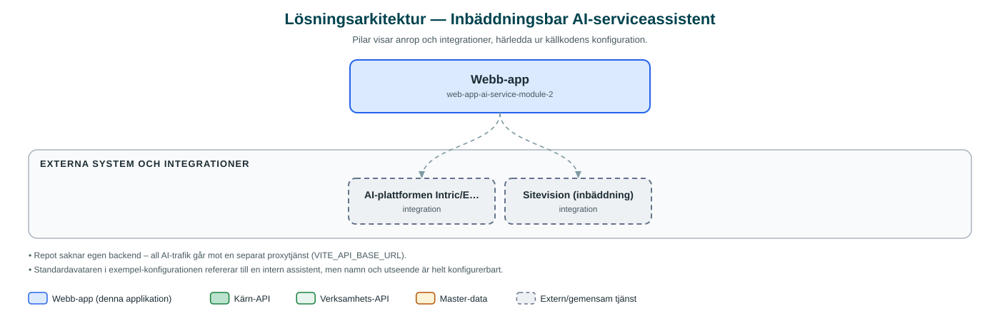

Inbäddningsbar AI-serviceassistent
Inbäddningsbar AI-chattassistent som kan placeras fristående eller bäddas in på valfri webbplats för att svara på besökarnas frågor.
Om applikationen
Detta är en chattkomponent med AI-assistent som kan bäddas in på kommunens webbplatser, till exempel sidor byggda i Sitevision, eller köras som fristående sida. Besökaren ställer frågor i ett chattfönster och får svar från en AI-assistent som strömmar sina svar.
Assistenten är kraftigt konfigurerbar utan kodändringar: rubriker, förslagsfrågor, färger, avatar, logotyp och läs-mer-länkar styrs via miljövariabler eller attribut i inbäddningskoden. Det finns även stöd för gruppchatt med flera assistenter.
Vilken AI-assistent som svarar bestäms av ett assistent-id och en säkerhetshash, och trafiken går via kommunens proxytjänst för AI-assistenter.
Det här stödjer applikationen
- Inbäddning på webbplats – Placeras i en div på valfri sida, med stöd för shadow DOM, eller körs fristående i helskärm.
- Konfigurerbart utseende och innehåll – Rubrik, förslagsfrågor, färgtema, avatar och läs-mer-länkar styrs via miljövariabler.
- Strömmande AI-svar – Svar från assistenten strömmas till användaren i realtid.
- Gruppchatt – Stöd för samtal där flera assistenter kan delta.
- Extra kontext – Sidinnehåll kan skickas med i inbäddningen som extra information till assistenten.
Teknisk dokumentation
Nedan beskrivs hur applikationen är uppbyggd, vilka API:er den använder och vad som krävs för att driftsätta den. Informationen är härledd ur källkoden och dess konfiguration på GitHub.
Arkitektur

Applikationen är en webbaserad frontend (React med Vite och kommunens designsystem (@sk-web-gui inkl. AI-komponenter)). Övriga integrationer som förekommer i koden: AI-plattformen Intric/Eneo (via kommunens proxytjänst), Sitevision (inbäddning).
Teknikstack
- Frontend: React med Vite och kommunens designsystem (@sk-web-gui inkl. AI-komponenter)
API-beroenden
Inga prenumerationer på kommunens API-plattform hittades i källkodens konfiguration.
Konfiguration och driftsättning
- Miljöfil per assistent (.env.<NAMN>.local utifrån .env.example)
- Assistent-id, hash och användare anges i miljöfil eller i inbäddningens data-attribut
- Bygget kopieras till Sitevision-webbappens källkatalog vid driftsättning
Noterbart ur källkoden
- Repot saknar egen backend – all AI-trafik går mot en separat proxytjänst (VITE_API_BASE_URL).
- Standardavataren i exempel-konfigurationen refererar till en intern assistent, men namn och utseende är helt konfigurerbart.
Källkod
Källkoden är öppen och finns hos Sundsvalls kommun på GitHub. I källkodsförrådet finns även instruktioner för att klona, konfigurera och starta applikationen i egen miljö.